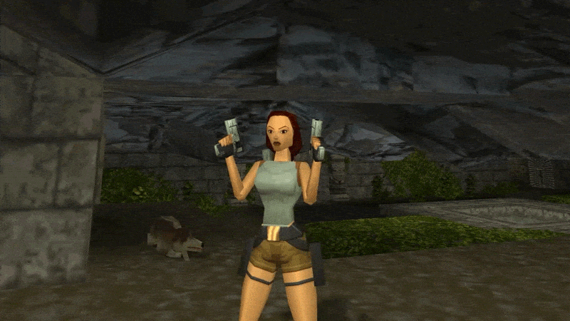
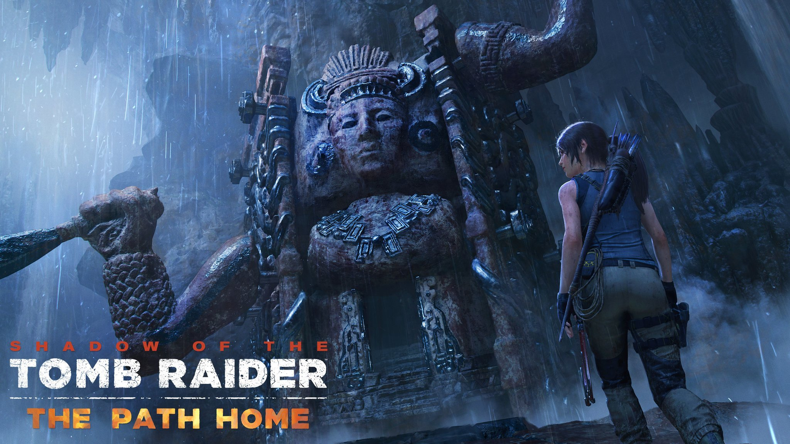

|
Tomb Raider è una serie di videogiochi appartenente alla categoria avventura dinamica, pubblicata a partire dal 1996
da Eidos Interactive e sviluppata inizialmente da Core Design. Il personaggio principale del gioco è Lara Croft,
un'archeologa avventurosa in cerca di antichi manufatti. Il titolo significa letteralmente "tombarola" in inglese.
Elda Olivieri ha doppiato Lara Croft da Tomb Raider II a Lara Croft and the Guardian of Light. Il primo
Tomb Raider non è stato né localizzato né doppiato in italiano. Dal nono capitolo la voce di Lara è prestata
da Benedetta Ponticelli, in occasione del riavvio della saga.
La prima serie di Tomb Raider ha segnato la storia
dei videogiochi, diventando una pietra miliare del genere avventura dinamica in terza persona e in tre dimensioni.
|

|
Tomb Raider (1996)
Pubblicato nel Natale del 1996 e campione di vendite, è il primo titolo della serie.
È stato reso disponibile per le piattaforme PlayStation, Sega Saturn,
PC, Nokia N-Gage, Mac OS (2003).
Nel primo capitolo della saga Lara Croft, famosa avventuriera e archeologa viene contattata da Jaqueline Natla,
ricca imprenditrice, per mettersi
alla ricerca di un pezzo dello Scion, antico artefatto di grande potere.
Lei accetta e si reca in Perù, ma una volta trovatolo nella tomba di Qualopec,
Lara viene attaccata da Larson, il quale è stato mandato dalla stessa Natla. Quindi cerca gli altri due pezzi dello Scion
in Grecia e in Egitto, ma poi il talismano le
viene sottrattodagli sgherri di Natla, che scopriremo non essere altro che una dei tre
signori di Atlantide, rinchiusa in ibernazione da Qualopec e Tihocan a
causa dei suoi folli sogni di distruzione, poi liberatasi.
Seguirà una caccia per fermare la spietata criminale all'interno di un'antica piramide
sotterranea situata
in un'isola del Pacifico e una fuga rocambolesca, dalla quale Lara tornerà solo con pochi frammenti dello Scion,
da lei distrutto per salvare il mondo.
|
Fino a...Shadow of the Tomb Raider
Questo capitolo, pubblicato nell'ottobre 2018 per PlayStation 4, Xbox One e personal computer,
è il seguito dei due precedenti.
Parla della giovane Lara che ha cominciato a dare la caccia alle cellule della Trinità,
ma che così facendo scopre dell'esistenza
di uno scrigno per poter ricreare l'universo a piacimento.
|

|